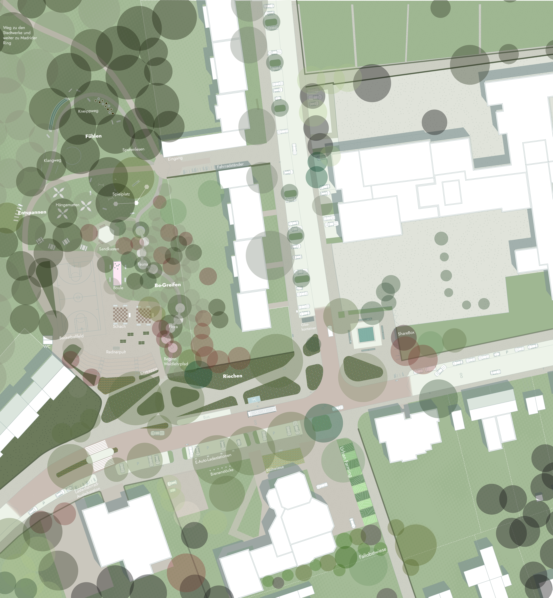
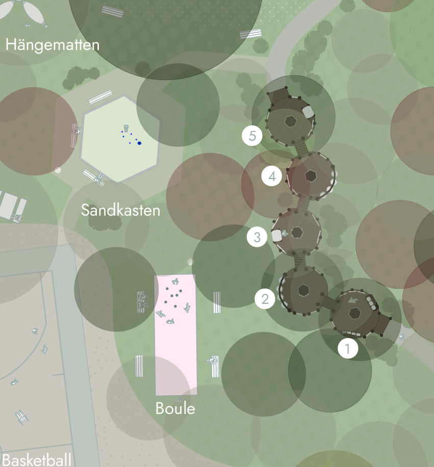

Around Albert-Maas-Straße and Schwalbenweg, Schönforst holds all the ingredients of a neighbourhood centre — a street, a football pitch, a school forecourt, a community centre — but none of them speak to one another. Each space serves its own users and its own hours, separated by fences, car parking and left-over ground.
Centre Schönforst sets out to read these spaces together rather than apart: to understand who uses them, when, and why the connections between them have been allowed to erode.
A mapping of existing spaces, uses and stakeholders around the site revealed how differently each group experiences Schönforst — schoolchildren crossing the forecourt, football clubs using the pitch in the evenings, residents passing through on Albert-Maas-Straße, and the community centre serving a slower, more local rhythm.
The existing green spaces surrounding these uses are underused: present, but not designed as connective tissue between them.
An important part of our design process was the exchange with local residents and users during a neighbourhood street festival. Through conversations with people from Schönforst, we learned that the area around the former football pitch was largely unknown to many residents.
Those who were familiar with the site often associated it primarily with drug-related activities and a feeling of insecurity, rather than with recreation or community use. These conversations highlighted the need to fundamentally change the perception and identity of the area.
Instead of an overlooked and negatively perceived space, the former football pitch should become an open, welcoming and active part of the neighbourhood.
The design brings the street space, football pitch, school forecourt and community centre together as one continuous landscape, strengthening their connections to the surrounding green spaces rather than treating each as an isolated plot.
Existing vegetation is integrated into the design rather than cleared for it, forming the backbone of a landscape that already belongs to the place.
New pathways stitch the street space to the football pitch, school forecourt and community centre, prioritising pedestrians and sustainable mobility over car-dominated routes, and giving each existing space a clear, legible connection to its neighbours.
Distinct areas are designed for different users and activities across the day — seating and gathering spaces near the community centre, informal play and sport around the pitch, and a calmer, greener threshold at the school forecourt. An Abenteuerweg, an adventure trail, winds through these areas, linking them for children and families on foot. Urban furniture and appropriate functions are placed to support each, without over-designing any single one.

The trail is structured as a sequence of five tree decks, each dedicated to a different group of woodland animals, followed by a set of shared outdoor spaces.
Sandpit — a sand-filled play area, edged with sturdy timber elements.
Basketball Court — outdoor sports flooring in acrylic or polyurethane / silicone-PU: weather-resistant and low-trip, giving optimal ball bounce while protecting the joints.
Boules Court — a water-bound surface of fine gravel (hardstone gravel as a base, with a fine top layer such as limestone chippings or HanseGrand 0/5), edged in timber so the boules roll well and water can drain.
Path Network — water-bound paths made from finely graded natural stone-mineral mixes of chippings, sand and gravel, without artificial sealing: environmentally friendly, natural, and letting rainwater drain directly into the ground.
The former football pitch receives particular attention as the site most affected by negative perception. Our design aims to make it visible, accessible and inviting, offering a wide range of activities for different age groups rather than a single, underused function.
Through sports, play, seating, outdoor learning, community gardening and ecological experiences, the former football pitch is transformed from a neglected space into a new social and educational centre for Schönforst.
Beyond its immediate users, the design anticipates the pressures already reshaping Schönforst: a changing climate that calls for shade, permeable ground and resilient planting; a changing demographic that will use these spaces differently over time; and a shift toward sustainable mobility that the layout is built to support rather than resist.